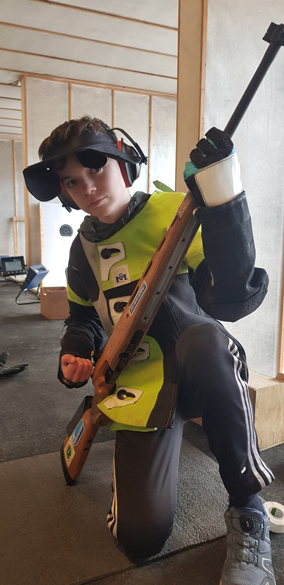

Mine hobbyer
Gaming og tentreff
Ein ting eg ofte gjør i fritiden min er og spela på datamaskin
 Eg har VR headsett og ein stasjoner PC. Det kan du se på bildet til høgre. Eg er interessert i korleis datamaskin virker og eg studerer det litt på fritiden min. Eg er også interisserti fysikk, og leser fleire bøker om avansert kvante fysikk i fritiden min. Eg har nok fått intereseen for astronomi og fysikk fra broren min Daniel, som studerer datasikkerhet.
Eg går også på tentreff, som er ein samling med ungdomar. Det er kvar fredag, og eg møter vennene mine der, inkludert de som bor på internat langt vekke.
Eg har også gått på skyting på Stord i eit år, men på grunn av tiden det tok og reise dit så sluttet eg.
Hvis eg ikkje gjør noken av de ovenfor, så spelar eg mest sannsynleg på datamaskinen min.
Eg har VR headsett og ein stasjoner PC. Det kan du se på bildet til høgre. Eg er interessert i korleis datamaskin virker og eg studerer det litt på fritiden min. Eg er også interisserti fysikk, og leser fleire bøker om avansert kvante fysikk i fritiden min. Eg har nok fått intereseen for astronomi og fysikk fra broren min Daniel, som studerer datasikkerhet.
Eg går også på tentreff, som er ein samling med ungdomar. Det er kvar fredag, og eg møter vennene mine der, inkludert de som bor på internat langt vekke.
Eg har også gått på skyting på Stord i eit år, men på grunn av tiden det tok og reise dit så sluttet eg.
Hvis eg ikkje gjør noken av de ovenfor, så spelar eg mest sannsynleg på datamaskinen min.
